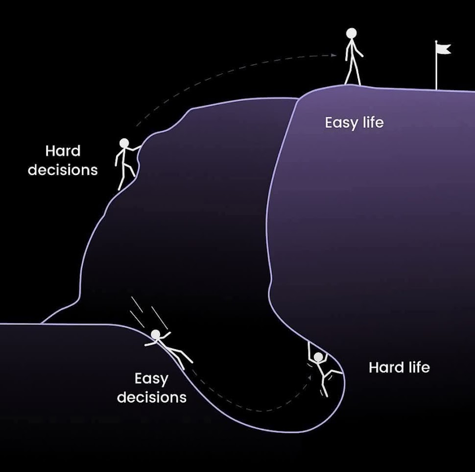

NCD、血压、血糖、血脂、体重与生活方式，用互动方式理解。
这是教育型可视化，不是医学诊断。

Brain · Gut · Skin
认识 hypertension 与长期管理。
理解 elevated glucose 与筛查。
认识 lipids 与心血管风险。
饮食、活动、睡眠与生活方式。
官方资料：500 mg vitamin C 的 extended-release tablet。
官方资料列出 EPA、DHA 与 omega-3。
官方资料将其定位为结合营养、补充品、运动等的生活方式计划。